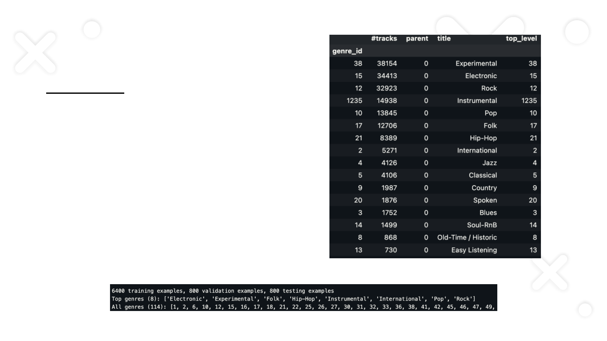
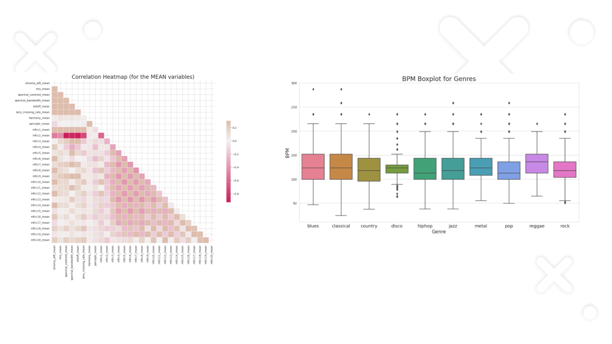
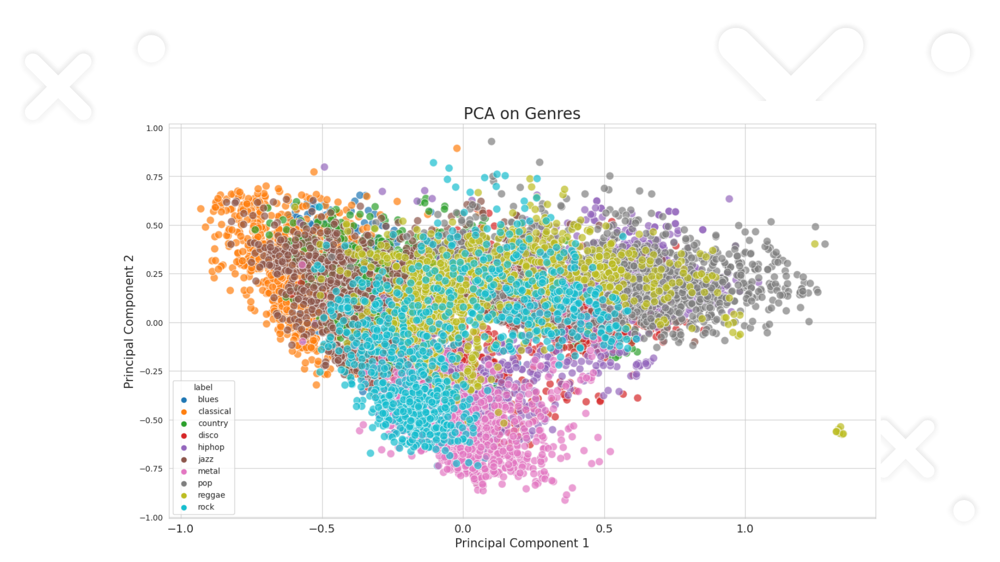
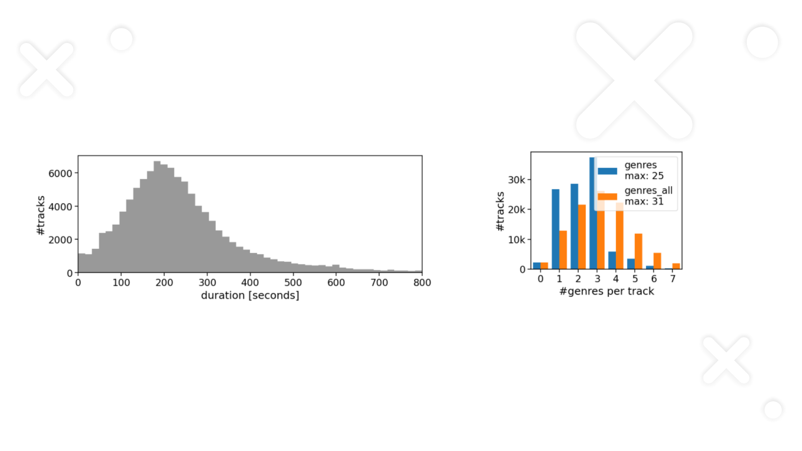
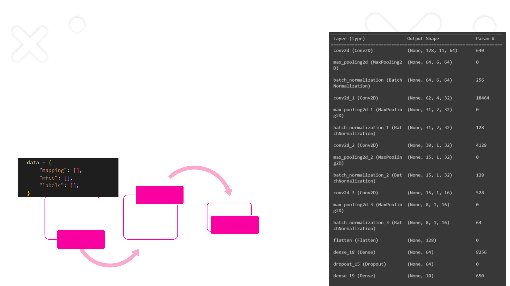
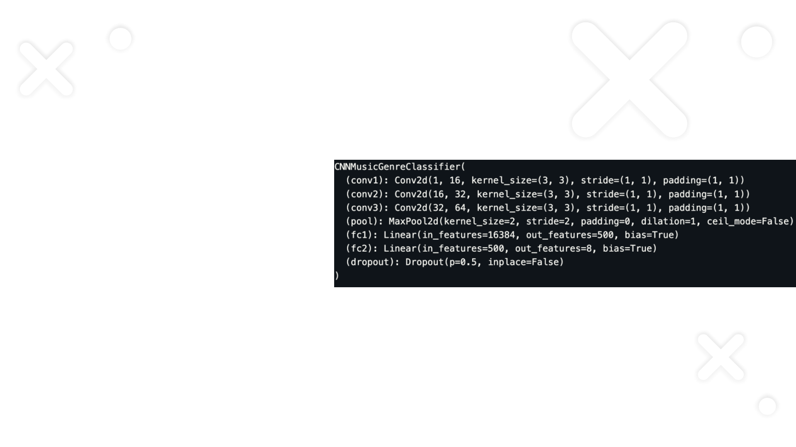

Introduction
• Music Genre Classification is a project that aims to develop a robust and
accurate system for classifying music genres . Our system will analyze various
characteristics of music such as tempo, rhythm, pitch, timbre, and spectral
feature. The project has potential to contribute significantly to the field of
music information retrieval. Our main goal is not only to create a system that
can accurately classify music genres, but also to gain deeper insights into
what characteristics define and differentiate various music genres

Motivation
• Enhancing Genre Classification Accuracy:
• Desire to improve accuracy due to complexity and variability in traditional systems.
• Ensemble techniques employed to amalgamate predictions and enhance classification accuracy.
• Applications and Benefits:
• Motivated by potential applications, especially in music recommendation systems.
• Accurate genre classification can lead to more personalized and satisfying user experiences.
• Intellectual Curiosity and Academic Motivation:
• Driven by intellectual curiosity and academic pursuit.
• Opportunity to delve deeper into machine listening and deep learning.
• Holistic Perspective:
• Project incorporates technical challenges, practical applications, and academic exploration.
• Comprehensive approach for a meaningful impact on music genre classification.
Datset
GTZAN Dataset
• Comprises 1000 audio tracks each lasting 30 seconds..
• Each track is a 30-second clip stored as a 22050Hz Mono 16-bit audio
file in .wav format.
• Extracted features used for genre classification.
• Dataset contains 10 genres, each with 100 tracks.
• Genres: Blues, Classical, Country, Disco, Hiphop, Jazz, Metal, Pop,
Reggae, Rock.
• Dataset had pre extracted mfcc features and csv file with calculated
mean and variance of various features (3sc and 30 sec)

Datset
FMA Dataset
+FMA (Free Music Archive)
+8000 tracks of 30 seconds
+8 balanced genres

Exploration (Gtzan)
• Blues Sample:

Exploration (GTZAN)

Exploration (GTZAN)

Exploration(FMA)
The duration distribution of each track in FMA The genre distribution of the track in FMA

Starting With Audio File
•Segment
•Data Extraction
MfCC
Extraction
•Adam(0.0004)
•Spare categorical
crossentropy
CNN
•72%
Accuracy
Input Shape: The input shape of the model is (130, 13, 1), representing the
dimensions of the input MFCCs.
Model Parameters: The model consists of 33,242 total parameters, with 32,954
trainable parameters and 288 non-trainable parameters.
Activation Functions: ReLU activation is used in convolutional and dense layers, while
softmax activation is employed in the output layer.
Fig: CNN for
GTZAN
Starting With CSV File
• Easier to perform classification (less computing
intensive)
• Tested across multiple machine learning model:’
• Xg boost got the best of the result among the
machine learning models with 90 percent
accuracy which was big shift from the accuracy
we got from the CNN starting from the audio file
Machine learning Models (GTZAN)
Starting With CSV File
• Built 4 model with different parameters
• Tried changing model parameters and adding
dropout layers which increased the accuracy
models
• Got 92% accuracy with model 3 having
434,442 parameters
• Model 4 had 2 mil parameters
Deep Learning Models
Architecture for model 3:
Dense(512, activation='relu')
Dropout(0.2)
Dense(256, activation='relu')
Dropout(0.2)
Dense(128, activation='relu')
Dropout(0.2)
Dense(64, activation='relu')
Dropout(0.2)
Dense(10, activation='softmax')
Total Parameters: 434,442
Optimizer: SGD (epochs=700)

Model for FMA
+Procedure
o The raw audio files are first preprocessed to extract meaningful
features that can be used as input to the CNN model. In this case, we
are extracting Mel-Frequency Cepstral Coefficients (MFCCs), which
are a common feature used in audio processing tasks.

Model for FMA
+Procedure
o Loading Audio: Each audio file is loaded, typically keeping a
consistent duration (e.g., first 30 seconds of each track) and sample
rate.
o Extracting MFCCs: MFCCs are extracted from the audio data. This
involves converting the raw audio signal into the frequency domain and
then into the Mel scale, followed by taking the log of the powers at each
Mel frequency.
o Padding: Since the duration of audio files might vary, the extracted
MFCCs are padded to ensure that they all have the same shape, which
is necessary for batching in neural networks. In this case, the padding
is done to reach a shape of [13, 2048] for each sample.

Model for FMA
+Defining the CNN Model
o Model Architecture: The CNN model is defined with convolutional
layers, pooling layers, and fully connected layers. The convolutional
layers extract spatial hierarchies of features from the MFCCs, and the
fully connected layers make the final classification.
o Input Shape: The input to the CNN is the preprocessed MFCCs,
reshaped to include a channel dimension, resulting in a shape of
[batch_size, 1, 13, 2048].

Model for FMA
+Result (Accuracy)
o Logistic Regression: 0.55
o MLP:0.67
o CNN: 0.875
o The CNN model has the best result.
Conclusion
Opportunities for Improvement:
• Hyperparameter Tuning: Experiment with learning rates, layer configurations, and dropout
rates.
• Data Augmentation: Enhance model robustness through data augmentation techniques.
• Ensemble Models: Explore ensemble methods for further performance boost
Key Takeaways:
•Developed a functional Music Genre Classification system.
•Demonstrated proficiency in audio data processing and CNN modeling.
•Opportunities for future enhancements and exploration.

THANK YOU !!